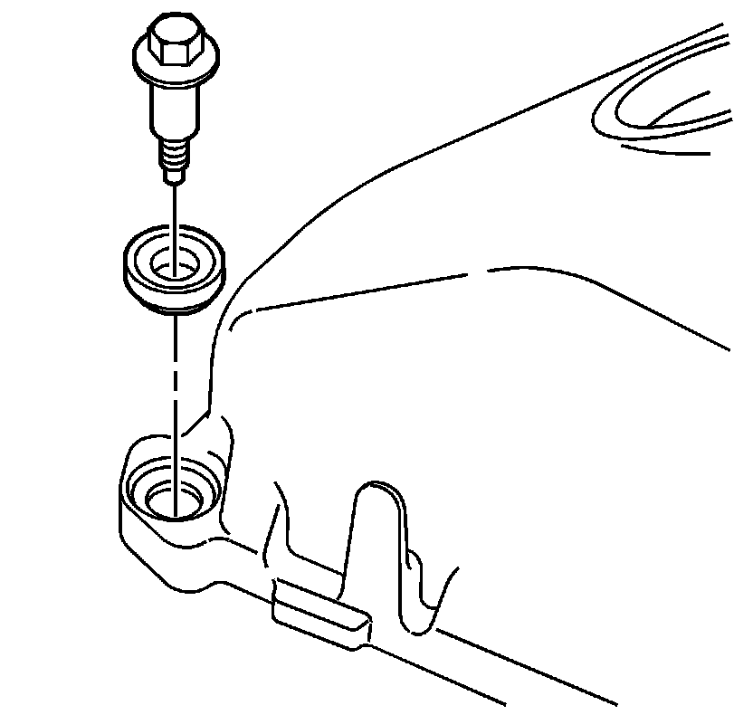
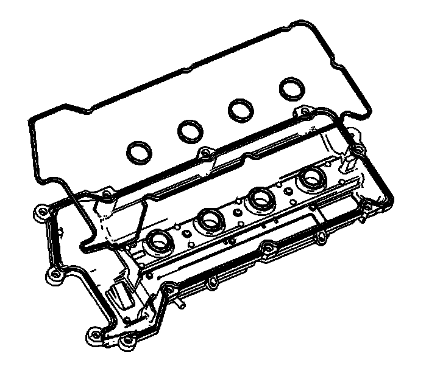
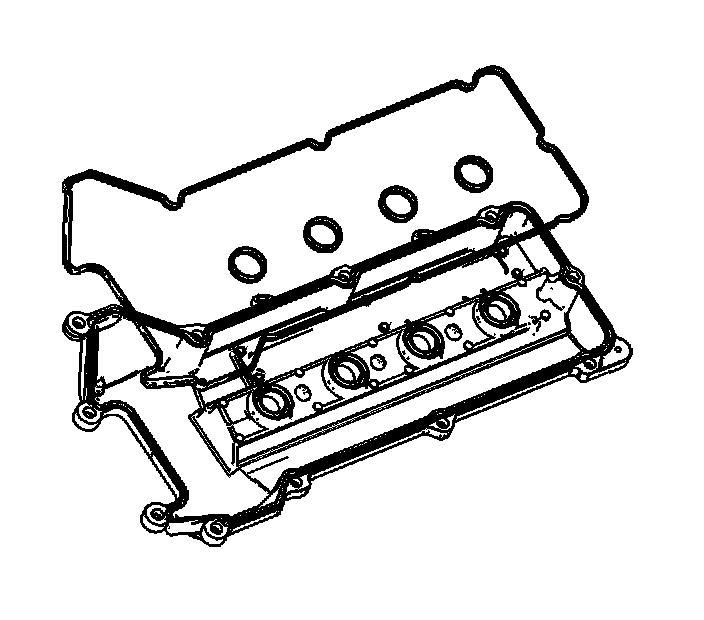

86. Camshaft Cover Assemble
Camshaft Cover Assemble

1. Install the camshaft cover bolt grommets.
2. Install the camshaft cover bolts.

3. Install the NEW left camshaft cover gasket.
4. Install the NEW left spark plug port seals.

5. Install the NEW right camshaft cover gasket.
6. Install the NEW right spark plug port seals.